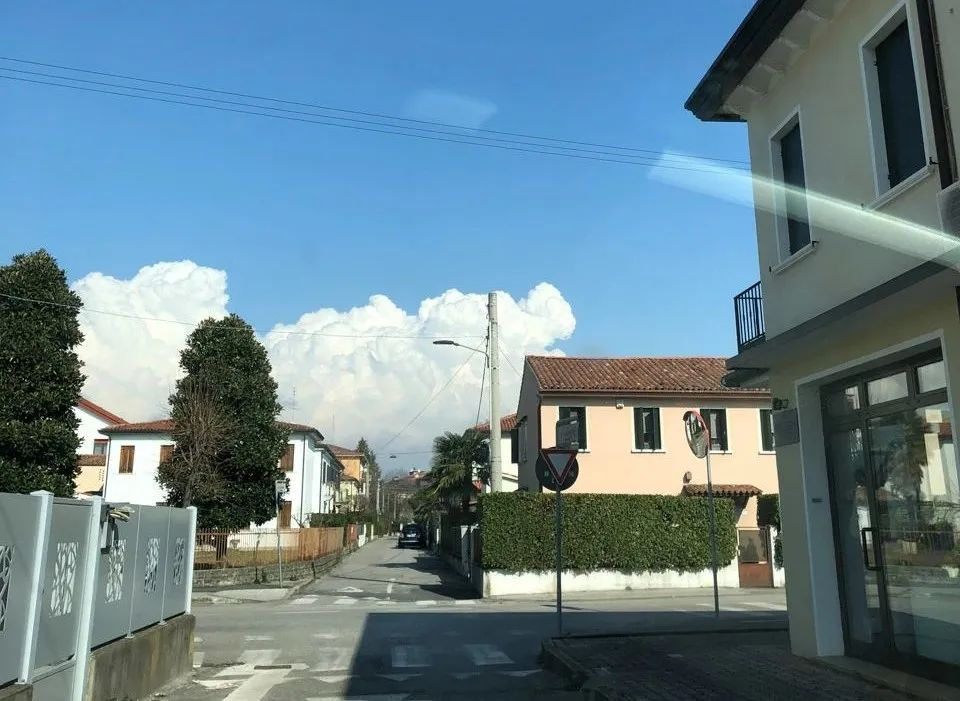
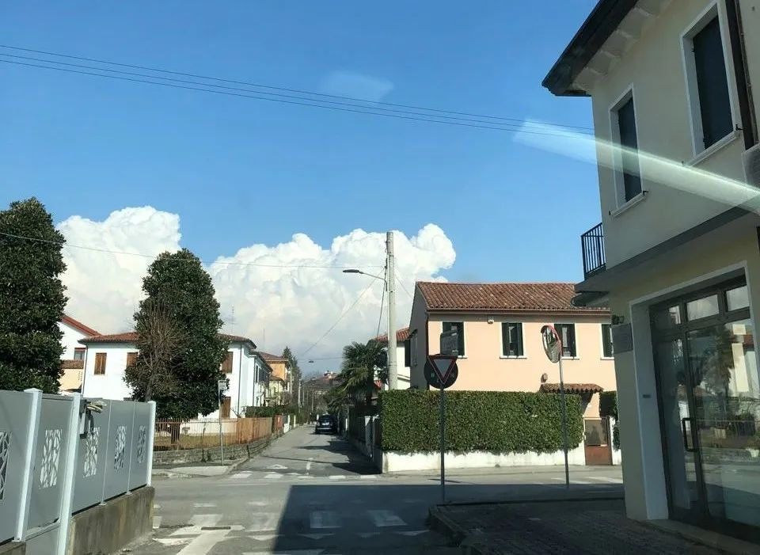
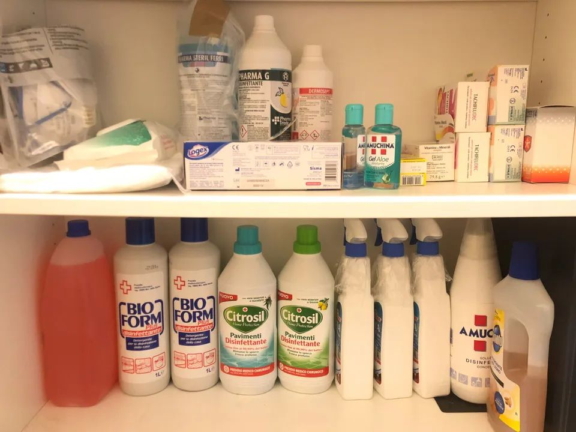

瑞士女议员因戴口罩被赶出议会大厅！如何理解“不戴口罩”的欧洲？
原文链接 备份链接 新冠肺炎疫情期间，少出门、勤洗手、戴口罩已经深深地刻在国人脑子里。不过，在疫情逐渐扩散的欧洲，戴口罩的反而成为异类，可能被“歧视”。 女议员因戴口罩被赶出议会大厅 根据当地时间3月3日18时意大利卫生部公布的最近数据， …
 *************▲*************春天来了，学校门前的路却空空荡荡。 （沉白白/图）
*************▲*************春天来了，学校门前的路却空空荡荡。 （沉白白/图）
全文共4034字，阅读大约需要7分钟。
本文首发于南方周末 未经授权 不得转载
文 | 沉白白
责任编辑 | 杨嘉敏
随着上周五（2020年2月21日）意大利第一例本土感染的新冠肺炎患者确诊，我突然身处“疫区”之中：20公里外的Vo’ Euganeo，两位老人在入院多日后核酸检测阳性，波及医护和其他病患，医院封闭时里面尚有450位患者及工作人员。接下来的每天都有新发病例确诊，离我居住的Padova市越来越近：截止27日晚，整个威尼托大区累计已经有116位核酸检测阳性，包括63例无症状感染，28名罹患肺炎入院，其中8位病情危重。20人接受医学观察，3人出院。
这次疫情中意大利并非疏于防守：国家层面，武汉爆发新冠肺炎以来它是第一个宣布关闭中国航线的国家。而日常生活中，2020年1月底，所有辗转从中国返回的华人都要求向卫生局报到并居家隔离14天，Padova就有两百多位华人主动接受了核酸检测，均为阴性。
所以当我看到爆发的新闻与1号病人的生活轨迹时，简直哭笑不得，仿佛一座博物馆装配了最先进的防盗设施，却被工作人员的一颗烟头烧个精光。病毒有充分的理由喜欢意大利人，他们热情开朗自来熟，见面打招呼行贴面礼（脸颊贴在一起左右左亲三次），业余生活丰富多彩，上有老下有小的年纪依然可以每周吃饭蹦迪踢球跑马拉松。于是1号病人以一己之力造成5万人隔离或医学观察，成功将病毒洒满意大利北部，又跟随意大利游客的脚步以不可阻挡之势蔓延到全欧洲。
一个小镇出现确诊，全部8位华人居民都被要求进行核酸检测（结果都是阴性），生活在意大利的华人却是目前最安全的群体——至少我认为如此。我们的防疫工作早在武汉封城之前就开始了。
1月下旬看到新冠肺炎的新闻我就开始焦虑，从淘宝为国内家人买了口罩。意大利华人积极为国内筹措物资；而我连夜取消与推迟春节期间旅拍与海外婚礼的工作，在亚马逊和专业网站逮到几盒漏网之鱼，去中国超市囤够了两周的零食调料，自觉开启宅家抗疫模式。华人社群风声鹤唳的时候，意大利人非常乐观自信。除开亚马逊口罩成倍涨价，专业医药网站口罩库存脱销，本地人只认为这是遥远东方正在经历的一场感冒。

作者家的抗疫物资储备，包括各类消毒水、常用药、一次性橡胶手套、洗鼻液、免洗酒精洗手液、消毒湿巾及口罩。 （沉白白/图）
春节后我开始在公共场所戴口罩。熟悉的意大利人带着警惕关切：在本地的公共卫生指南里，只有严重免疫缺陷或烈性传染病患者才会戴口罩出门，无论哪种情况都是“命不久矣”的标志。我为避免麻烦只好一律说因为花粉过敏，哪怕往年都是从3月才开始花粉季。陌生的意大利人看见我如同瘟疫，迎面走来自动弹开。朋友圈里开始有各类流言，真真假假说的都是意大利人对“口罩华人”的歧视甚至暴力。
当2例中国游客在意大利被确诊，华人和他们所经营的餐厅与商业成为意大利人心中避之不及的“疫区”，客流量骤降50-80%，米兰有议员去唐人街中餐馆吃饭“撑华人反歧视”。谁也不曾料到三周之后华人商户纷纷关门休假，是害怕被意大利人传染。
2月的意大利有许多国际性的活动，离我最近的是米兰时装周与威尼斯狂欢节。我们在时装周的工作毫无悬念地取消了，因为80%的中国买手与秀场嘉宾未能出席。根据安莎社的报道，受中国的疫情影响，今年意大利奢侈品销售会面临30%的降幅。旅游市场也格外冷清：没有了春节假期的客流，威尼斯高级酒店的房价近乎腰斩。但这一切都不影响当地歌舞升平的日常，关于新冠肺炎的防疫，最主要的措施仅仅是“看好那些中国人”。而中文社交媒体上流传甚广的一张圣马可广场上有人身穿防护服却没能正确佩戴口罩的照片，其实只是狂欢节上游客讽刺疫情的扮相。

在中国网站上流传甚广的这张图片，其实只是威尼斯狂欢节上的恶搞扮相。（南方周末资料图/图）
2月中旬生活依然平静，虽然坚持戴口罩的我受人侧目，形势似乎已经缓和。寄防护服回中国时，邮局工作人员已经对流程与文件轻车熟路，安抚我说今天一定发出，并对中国的困难表示同情。我把之前囤的四盒口罩也寄回了中国，乐观地认为只要华人社群不爆发疫情，意大利就可以满分交卷。

作者在2月14日寄出和朋友们一起捐赠的防护服，但因为直航取消，至今还未到中国。 （沉白白/图）
然而生活总是在一个轻率的决定之后给人当头一棒。那边EMS还在海上漂，这头意大利的疫情就爆发了。2月21日星期五晚上，意大利首次公布本土传播病例，北部两个城市聚集发病，刷爆了我的朋友圈。安莎社网站罕见的整版全是疫情报道，数字每小时上涨，我立刻取消了第二天去米兰看场地的行程，又劝退3月初准备从剑桥来威尼斯面谈的新娘，等到打开亚马逊的网站搜索“口罩”，之前买过的全线售罄，医用一次性外科口罩暴涨到100欧50支。想着过去的一个月每天戴一个新的口罩，为自己的挥霍感到懊恼。最后匆忙找到一家50欧的下单了一盒，隔天收到发现是薄薄的两层：趁乱打劫的人哪里都有，这点倒是和病毒很像。
周五在不断跳动的数字中过完惊心动魄的一整晚。家人和朋友纷纷在凌晨发来消息询问近况——国内的周六早上，意大利的疫情已经在中国传开。妈妈很焦虑，我在最初的几个小时之后趋于冷静：数字迅速上涨说明监控范围大，排查面积广，信息透明。更何况检测的对象是密切接触者，其中大部分并未出现症状更无须治疗。这部分阳性案例被及时隔离，能有效阻止疫情扩散。
我在四川经历过汶川地震，也有强烈的防灾意识。所以周六起床的头等大事便是囤物资准备居家隔离。一夜之间，防疫10条生活守则已经贴在城市道路的广告牌上，介绍了新冠病毒感染的症状，强调不要自行去急诊室，勤洗手等等，效率之高是我在意大利10年前所未见：从前的印象里让意大利人周末加班简直比登天还难。但细看下来这守则又让人哭笑不得：第8条写着，产自中国的商品和寄自中国的包裹是安全的，无需因为接触过而申请核酸检测。第7条强调“只有出现相关症状或与新冠肺炎患者密切接触才需要佩戴口罩，日常戴口罩是不对的”。但我们从中国知道的经验是新冠病毒潜伏期长，意大利的无症状携带者尤其多，“不让他人恐慌”和“保护自己与对方”之间孰轻孰重，其实并不难抉择。
天气很好，人却很少。（沉白白/图）
在指导政策与独立思考之间，意大利人民也会用脚投票：周六一早家居DIY店的工业防护口罩已经卖空。护目镜与乳胶手套也缺货，大概有不少消息灵通的人看了中国的新闻。戴着口罩的我直奔主题不再闲逛，5分钟内买齐所需来到收银台，却听到两个收银员翻着白眼用嫌弃的口吻在议论我：“她为什么戴口罩?”“不知道，可能因为她有病吧。”这样的言论放在平时已经涉嫌歧视，本应找他们经理投诉理论的。但当下我只想着中国超市的螺蛳粉，便不再恋战赶紧走人。
国内发生疫情之后中国超市长时间门可罗雀。意大利人不敢去，华人担心有国内病毒携带者光顾也不敢去。但这个周六不同。意大利公布疫情的第二天，方便面货架几乎被搬空，速冻水饺也宣告售罄，连大米都只剩下最后一袋，看来全城华人跟我一样都打算向中国学习把病毒憋死在家里。平日里货比三家的劲头不见了，大家都戴着口罩埋头添加购物车，因为老板说明天开始不再开门营业，只接受网上预订，定时取货。
意大利超市还是懵懂无知的另一番景象。至少我的城市并不像网上流传的那样遭到哄抢货架被搬空。哪怕位于疫情的“黄区”：即未封锁但严格管控区域，包括米兰市和Padova市等，蔬菜肉类甚至海鲜都应有尽有，只是酒精洗手液和消毒用品缺货。但这才是疫情公布的第二天，还有大部分不知道或不关心疫情的意大利人没有任何防护物资，短时间内可能也很难买到。

超市照常营业，水果蔬菜供应充足价格合理。（沉白白/图）
周六下午城市的气氛开始紧张，可能因为确诊的数字增长太快，有可能我们的城市附近病例太多，街上也有其他人戴起了口罩。楼下药房在中午贴出告示称“口罩售罄”。如今意大利的官方指南不推荐民众日常佩戴口罩，一部分也是无奈之举。毕竟有限的医疗资源只有用在最需要的地方，才能发挥最大的效益。
傍晚回家时遇到房东先生，他年过七旬，去年动过大手术身体虚弱，如今每周需要去医院复诊，老两口都属于新冠肺炎的易感人群。他用围巾捂住口鼻，希望在药店买到两个口罩应急：显然这已经是不可能完成的任务。于是我赶紧回家从仅剩的一盒里拿了10个口罩，加上一瓶酒精洗手液送到楼下。房东太太像往常一样健谈，从我家猫狗问候到故乡亲人，又吐槽意大利政府防疫不力：有国民咨询卫生部滞留在中国怎么办，卫生部建议从泰国转机回意大利；又说新冠病毒的重症主要是老年人，但媒体只强调轻症为主大多能自愈，似乎忽视了老年人的利益。我们站在门里和门外聊了许久，分别的时候没有像以前一样行贴面礼，她向我飞吻，我向她手动比心，然后我们各自回家，可能挺久不会再见面。

意大利人终于戴起了口罩。（沉白白/图）
疫情发生的48小时之内意大利就下达了封城和关闭学校的命令，紧接着米兰大教堂关闭，威尼斯狂欢节提前闭幕，阿玛尼的发布会也取消了所有的观众，只留下模特在T台上走秀。华人业主相约主动关闭了他们的商店、酒吧、理发店……贴上“放假一周”的告示。被意大利媒体戏谑“大年三十都坚持赚钱”的老板们终于有了一个长长的假期。
同样为假期兴奋的还有停课后的孩子们。威尼托大区本周关闭了学校，却没有要求大家在家隔离。看着窗外三三两两去踢球的孩子我的内心十分复杂，想起超市里戴着一次性橡胶手套买走最后一瓶消毒水的意大利大叔又让我感觉分裂。在个体自由与集体利益之间，意大利需要非常小心地找到一个能够逐渐控制疫情的平衡，或者说，未来的两周里，它会证明是否真的有这样一个平衡点存在。
周四新增的确诊病例又离我近了一些，这次在Padova市区。一位附近城市接诊过死亡患者的医生，在两天自我隔离后收到核酸检测阳性报告。万里之外的妈妈很紧张，但我依然戴着口罩遛狗，生活如常。毕竟我们已经不是从零开始学习对抗疫情，威尼托在只有30例确诊时就已经建好总计900个床位，满足隔离条件的独立帐篷方舱。而在经历了数个口罩群里的乌龙与罗生门之后，远在美国的朋友寄出了两盒N95，看着快递追踪记录，我的心里又踏实了一些。
戳击下面图片 继续阅读专题


原文链接 备份链接 新冠肺炎疫情期间，少出门、勤洗手、戴口罩已经深深地刻在国人脑子里。不过，在疫情逐渐扩散的欧洲，戴口罩的反而成为异类，可能被“歧视”。 女议员因戴口罩被赶出议会大厅 根据当地时间3月3日18时意大利卫生部公布的最近数据， …
原文链接 备份链接 体坛周报全媒体驻意大利记者 王勤伯 （一） 保加利亚卢多戈雷茨欧联杯1/16决赛来米兰打客场，球员一路都戴着口罩，甚至在进入球场的时候也戴着，只有出场比赛没有戴。 空场比赛将是本周末意甲联赛的普遍景象。昨天发表在体坛 …
原文链接 备份链接 在苏格兰格拉斯哥大学读书的几个中国留学生去超市购物的路上，一个当地老奶奶询问他们：“是中国来的学生吗？”当他们回答“是”之后，老奶奶说：“let me give you a hug（让我给你一个拥抱）”。 全文2275 …
原文链接 备份链接 _ 新冠病毒肺炎疫情可能会导致中国经济活动受扰，但目前可能不会成为影响全球市场的主要因素。中美金融市场最近的表现，表明投资者担忧的疫情对金融市场的影响在减弱，从政府到个人的资金支持及捐赠，也提振了市场和人心 _ …
原文链接 备份链接 数据来源：腾讯新冠肺炎疫情实时追踪 截至2月1日上午6时，海外国家疫情情况 截至2月1日上午6时， 全国新型肺炎确诊病例超过11180例， 海外国家共确诊124例。 北京时间1月31日，世界卫生组织WHO宣布 将此次 …